Example for regression line
# Create matrix manually and convert to tibble
ma1 <- matrix(data=c(0,
1,
2,
3,
4,
5,
3.3,
4.3,
4.5,
9.4,
13.9,
10.5), ncol = 2)
colnames(ma1) <- c("X", "Y")
df1 <- as_tibble(ma1)
df1## # A tibble: 6 × 2
## X Y
## <dbl> <dbl>
## 1 0 3.3
## 2 1 4.3
## 3 2 4.5
## 4 3 9.4
## 5 4 13.9
## 6 5 10.5# Plot as scatter plot with regression line
df1 %>%
ggplot(aes(x=X, y=Y))+
geom_point(color = "blue", size=5)+
geom_smooth(method = "lm", se=F, color = 'red')+
xlim(0, 5)+
ylim(0,15)+
labs(title = "Simple regression line")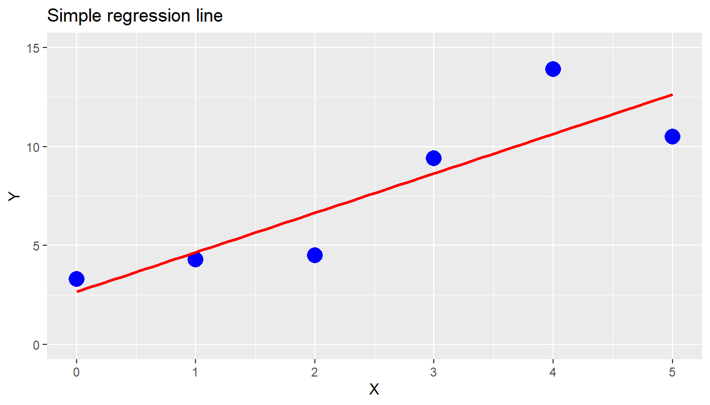
Show details of regression:
##
## Call:
## lm(formula = X ~ Y, data = df1)
##
## Residuals:
## 1 2 3 4 5 6
## -0.8215 -0.2073 0.7155 -0.1753 -0.9117 1.4003
##
## Coefficients:
## Estimate Std. Error t value Pr(>|t|)
## (Intercept) -0.4519 0.9085 -0.497 0.6450
## Y 0.3859 0.1059 3.643 0.0219 *
## ---
## Signif. codes: 0 '***' 0.001 '**' 0.01 '*' 0.05 '.' 0.1 ' ' 1
##
## Residual standard error: 1.007 on 4 degrees of freedom
## Multiple R-squared: 0.7684, Adjusted R-squared: 0.7105
## F-statistic: 13.27 on 1 and 4 DF, p-value: 0.0219
Example rom video Link
# Using Car-data-set
df_cars <- cars
# Plot data points and linear regression (LR) line
df_cars %>%
ggplot(aes(x=speed, y=dist))+
geom_point(color = "blue", size = 5)+
geom_smooth(method = "lm", se=F, color = "red")+
xlim(0, 27)+
ylim(-10,125)+
labs(title = "Simple regression line")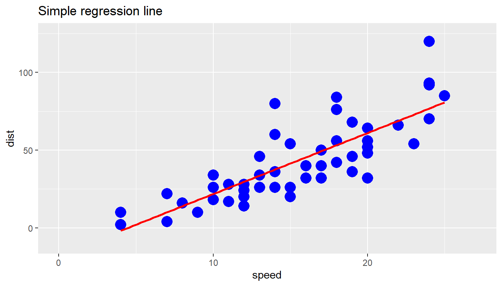
Details of regression line model
##
## Call:
## lm(formula = dist ~ speed, data = df_cars)
##
## Residuals:
## Min 1Q Median 3Q Max
## -29.069 -9.525 -2.272 9.215 43.201
##
## Coefficients:
## Estimate Std. Error t value Pr(>|t|)
## (Intercept) -17.5791 6.7584 -2.601 0.0123 *
## speed 3.9324 0.4155 9.464 1.49e-12 ***
## ---
## Signif. codes: 0 '***' 0.001 '**' 0.01 '*' 0.05 '.' 0.1 ' ' 1
##
## Residual standard error: 15.38 on 48 degrees of freedom
## Multiple R-squared: 0.6511, Adjusted R-squared: 0.6438
## F-statistic: 89.57 on 1 and 48 DF, p-value: 1.49e-12
Append additional columns to dataset (residuals)
# Append column for residuals
df_cars$residuals <- model1$residuals
df_cars$predicted <- model1$fitted.values
head(df_cars)## speed dist residuals predicted
## 1 4 2 3.849460 -1.849460
## 2 4 10 11.849460 -1.849460
## 3 7 4 -5.947766 9.947766
## 4 7 22 12.052234 9.947766
## 5 8 16 2.119825 13.880175
## 6 9 10 -7.812584 17.812584
Plot residuals
# Plot residuals
df_cars %>%
ggplot(aes(x=speed, y=residuals))+
geom_point(color = "blue", size = 3)+
geom_smooth(method = "lm", se=F, color = "darkgrey")+
labs(title = "Residuals")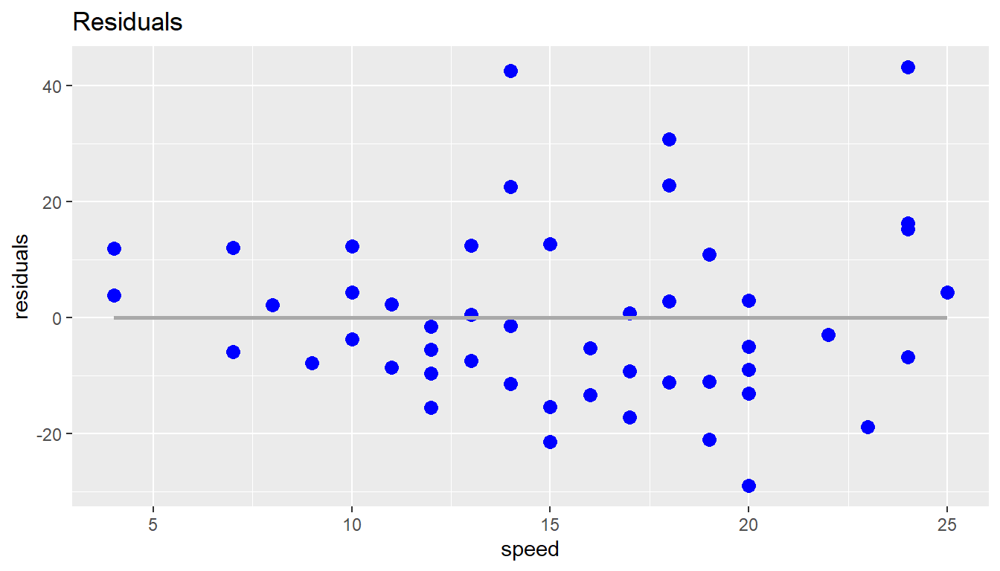
Calculate values according to lm-model, i.e. y = a + b * x
# calculate values from lm model for:
## create df for values to be calculated
df_values <- data.frame(speed = c(12.5, 15.5, 17))
## calculate values
df_values$dist <- predict(model1, df_values)
df_values## speed dist
## 1 12.5 31.57601
## 2 15.5 43.37324
## 3 17.0 49.27185
Relationship between total length and head length
# Prepare data set
df_select <- possum %>%
select(total_l, head_l) %>%
arrange(total_l)
head(df_select)## # A tibble: 6 × 2
## total_l head_l
## <dbl> <dbl>
## 1 75 84.7
## 2 76 85.1
## 3 77 85.3
## 4 80.5 92.4
## 5 80.5 85.9
## 6 80.5 88.4
Scatterplot for Possum: total length vs head length
df_select %>%
ggplot(aes(x=total_l, y=head_l))+
geom_point(color = "blue", size = 3)+
geom_smooth(method = "lm", se=F, color = "darkgrey")+
labs(title = "Possums: Total length vs Head length")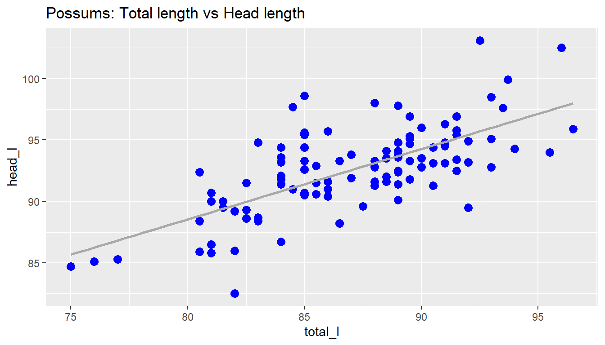
Details of regression line model
##
## Call:
## lm(formula = head_l ~ total_l, data = df_select)
##
## Coefficients:
## (Intercept) total_l
## 42.7098 0.5729
Predict a value
Calculate values according to lm-model, i.e. y = a + b * x
# predict a value from lm model:
## create df for values to be calculated
df_values <- data.frame(total_l = c(80, 89))
## calculate values
df_values$head_l <- predict(model_possum, df_values)
df_values## total_l head_l
## 1 80 88.54190
## 2 89 93.69801
Residuals
Calculate the predicted values “y_hat” (fitted values) and residuals
# Append column for predicted values and residuals
df_select$predicted <- model_possum$fitted.values
df_select$residuals <- model_possum$residuals
head(df_select)## # A tibble: 6 × 4
## total_l head_l predicted residuals
## <dbl> <dbl> <dbl> <dbl>
## 1 75 84.7 85.7 -0.977
## 2 76 85.1 86.3 -1.15
## 3 77 85.3 86.8 -1.52
## 4 80.5 92.4 88.8 3.57
## 5 80.5 85.9 88.8 -2.93
## 6 80.5 88.4 88.8 -0.428
Plot residuals
# Plot residuals
df_select %>%
ggplot(aes(x=total_l, y=residuals))+
geom_point(color = "blue", size = 3)+
geom_smooth(method = "lm", se=F, color = "darkgrey")+
labs(title = "Possum data: Residuals")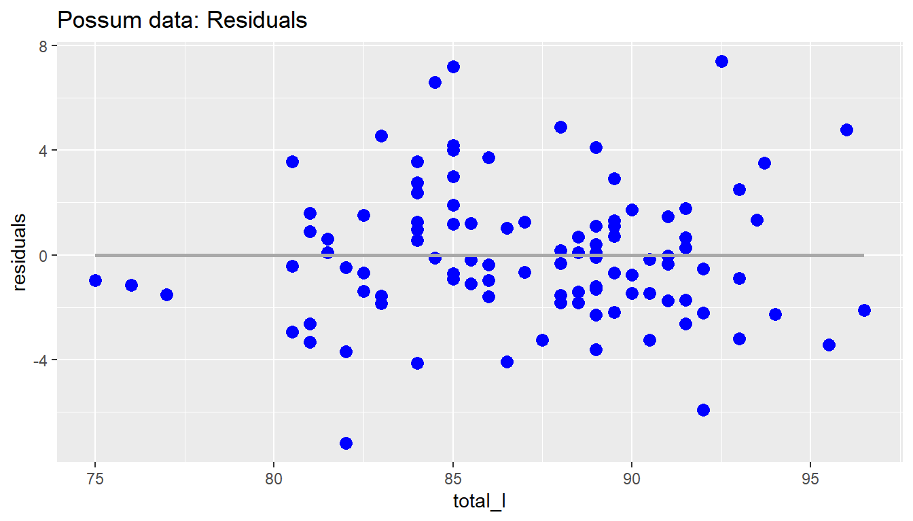
Correlation coefficient for observations
“R = 1/(n-1)[(xi-xmean)(yi-ymean)]/(sx * sy)”
# Pearson correlation coefficient R = 1/(n-1)*[(xi-xmean)(yi-ymean)]/(sx*sy)
x <- df_select$total_l
y <- df_select$head_l
r_coe <- cor(x,y, method = "pearson")
print(paste("R = ",r_coe))## [1] "R = 0.691093697393505"
Example Emhurst College: Relationship between family income and gift aid
# Prepare data set
df_select_elmhurst <- elmhurst %>%
select(family_income, gift_aid) %>%
arrange(desc(family_income))
head(df_select_elmhurst)## # A tibble: 6 × 2
## family_income gift_aid
## <dbl> <dbl>
## 1 272. 20
## 2 236. 7
## 3 218. 23
## 4 217. 20
## 5 208. 14
## 6 207. 11
Scatterplot for Elmhurst College: family income vs gift aid
df_select_elmhurst %>%
ggplot(aes(x=family_income, y=gift_aid))+
geom_point(color = "blue", size = 3)+
geom_smooth(method = "lm", se=T, color = "darkgrey")+
labs(title = "Elmhurst College: Family income vs Gift aid")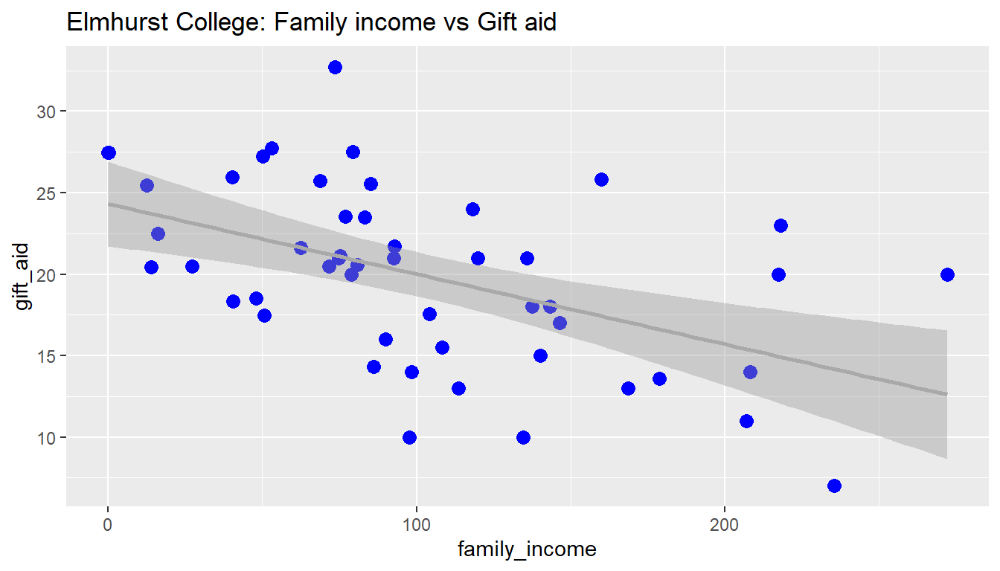
Details of regression line model
# Details of LR line
model_elmhurst <- lm(gift_aid ~ family_income, data = df_select_elmhurst)
model_elmhurst##
## Call:
## lm(formula = gift_aid ~ family_income, data = df_select_elmhurst)
##
## Coefficients:
## (Intercept) family_income
## 24.31933 -0.04307##
## Call:
## lm(formula = gift_aid ~ family_income, data = df_select_elmhurst)
##
## Residuals:
## Min 1Q Median 3Q Max
## -10.1128 -3.6234 -0.2161 3.1587 11.5707
##
## Coefficients:
## Estimate Std. Error t value Pr(>|t|)
## (Intercept) 24.31933 1.29145 18.831 < 2e-16 ***
## family_income -0.04307 0.01081 -3.985 0.000229 ***
## ---
## Signif. codes: 0 '***' 0.001 '**' 0.01 '*' 0.05 '.' 0.1 ' ' 1
##
## Residual standard error: 4.783 on 48 degrees of freedom
## Multiple R-squared: 0.2486, Adjusted R-squared: 0.2329
## F-statistic: 15.88 on 1 and 48 DF, p-value: 0.0002289
Calculate mean and sd for both variables
# Pivot df to df_longer
df_select_long <- df_select_elmhurst %>%
pivot_longer(cols = 1:2,
names_to = "name",
values_to = "value")
# summarize for mean and sd
df_select_long %>%
group_by(name) %>%
summarise(mean = mean(value),
sd = sd(value))## # A tibble: 2 × 3
## name mean sd
## <chr> <dbl> <dbl>
## 1 family_income 102. 63.2
## 2 gift_aid 19.9 5.46
Calculate correlation between both variables
# correlation R
x <- df_select_elmhurst$family_income
y <- df_select_elmhurst$gift_aid
r_coe <- cor(x,y, method = "pearson")
print(paste("R = ",r_coe))## [1] "R = -0.498556137030873"
Calculate R-squared
## [1] "R-squared = 0.248558221771146"
Relationship between Condition and Total Price
# Prepare data set
df_select <- mariokart %>%
select(cond, total_pr) %>%
arrange(cond, total_pr)
head(df_select)## # A tibble: 6 × 2
## cond total_pr
## <fct> <dbl>
## 1 new 40.1
## 2 new 41.5
## 3 new 44
## 4 new 45
## 5 new 45
## 6 new 45.5# rename and convert to numerical
df_select$cond <- recode(df_select$cond,
"used" = 0,
"new" = 1)
# Remove extreme values (outliers)
df_select2 <- df_select %>%
filter(total_pr <=100)
Scatterplot for Mario Kart: Condition vs. Total Price
df_select2 %>%
ggplot(aes(x=cond, y=total_pr))+
geom_point(color = "blue", size = 5, alpha = 0.2)+
geom_smooth(method = "lm", se=F, color = "darkgrey")+
labs(title = "Mario Kart: Condition vs Total Price",
subtitle = "Used (0), New(1)")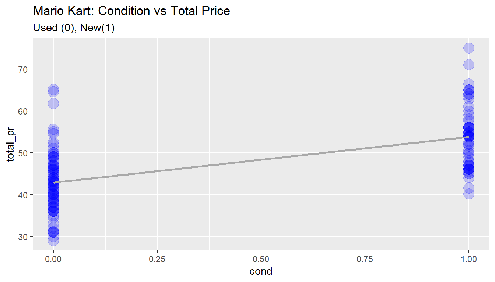
Details of regression line model
##
## Call:
## lm(formula = total_pr ~ cond, data = df_select2)
##
## Coefficients:
## (Intercept) cond
## 42.87 10.90##
## Call:
## lm(formula = total_pr ~ cond, data = df_select2)
##
## Residuals:
## Min 1Q Median 3Q Max
## -13.8911 -5.8311 0.1289 4.1289 22.1489
##
## Coefficients:
## Estimate Std. Error t value Pr(>|t|)
## (Intercept) 42.871 0.814 52.668 < 2e-16 ***
## cond 10.900 1.258 8.662 1.06e-14 ***
## ---
## Signif. codes: 0 '***' 0.001 '**' 0.01 '*' 0.05 '.' 0.1 ' ' 1
##
## Residual standard error: 7.371 on 139 degrees of freedom
## Multiple R-squared: 0.3506, Adjusted R-squared: 0.3459
## F-statistic: 75.03 on 1 and 139 DF, p-value: 1.056e-14
Relationship between total length and head length
Filter out election data during Great Depression (unemp > 12%)
# Prepare data set
df_select <- midterms_house %>%
select(party, unemp, house_change) %>%
filter(unemp <= 12) %>%
arrange(desc(unemp))
head(df_select)## # A tibble: 6 × 3
## party unemp house_change
## <fct> <dbl> <dbl>
## 1 Republican 11.6 -9.22
## 2 Republican 9.7 -13.5
## 3 Democrat 9.7 -24.9
## 4 Republican 8.94 -19.3
## 5 Republican 7 -2.75
## 6 Republican 6.93 -25.5
Scatterplot for Midterms election vs. unemployment
df_select %>%
ggplot(aes(x=unemp, y=house_change))+
geom_point(aes(color=party, shape=party), size=4)+
geom_smooth(method = "lm", se=F, color = "black", size = 0.6)+
ylim(-30, 12)+
xlim(2.5, 12)+
labs(title = "Change in Midterms Election vs. Unemployment Rate")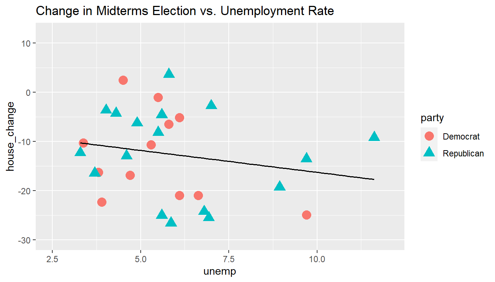
Details of regression line model
##
## Call:
## lm(formula = house_change ~ unemp, data = df_select)
##
## Coefficients:
## (Intercept) unemp
## -7.3644 -0.8897##
## Call:
## lm(formula = house_change ~ unemp, data = df_select)
##
## Residuals:
## Min 1Q Median 3Q Max
## -14.0124 -7.6989 0.0913 7.2974 16.1447
##
## Coefficients:
## Estimate Std. Error t value Pr(>|t|)
## (Intercept) -7.3644 5.1553 -1.429 0.165
## unemp -0.8897 0.8350 -1.066 0.296
##
## Residual standard error: 8.913 on 27 degrees of freedom
## Multiple R-squared: 0.04035, Adjusted R-squared: 0.004812
## F-statistic: 1.135 on 1 and 27 DF, p-value: 0.2961
Convert List into data frame
# Convert list into data frame
df_model_midterms <- as_tibble(summary(model_midterms)$coefficient)
df_model_midterms## # A tibble: 2 × 4
## Estimate `Std. Error` `t value` `Pr(>|t|)`
## <dbl> <dbl> <dbl> <dbl>
## 1 -7.36 5.16 -1.43 0.165
## 2 -0.890 0.835 -1.07 0.296Calculate T-value (manually)
# Calculate t-values
t_b0 <- as.numeric((df_model_midterms[1,1] - 0)/df_model_midterms[1,2])
t_b1 <- as.numeric((df_model_midterms[2,1] - 0)/df_model_midterms[2,2])
print(paste("t-value (b0) = ", t_b0))## [1] "t-value (b0) = -1.42850994039318"## [1] "t-value (b1) = -1.06554573422237"Calculate p-value (manually)
# calculate p-values
f <- as.numeric(model_midterms$df.residual)
p_b0 <- 2 * (1-pt(abs(t_b0), f))
p_b1 <- 2 * (1-pt(abs(t_b1), f))
print(paste("p-value (b0) = ", p_b0))## [1] "p-value (b0) = 0.16461212437359"## [1] "p-value (b1) = 0.296065350267966"
Example Emhurst College: Relationship between family income
and gift aid
# Details of LR line
model_elmhurst <- lm(gift_aid ~ family_income, data = df_select_elmhurst)
summary(model_elmhurst)##
## Call:
## lm(formula = gift_aid ~ family_income, data = df_select_elmhurst)
##
## Residuals:
## Min 1Q Median 3Q Max
## -10.1128 -3.6234 -0.2161 3.1587 11.5707
##
## Coefficients:
## Estimate Std. Error t value Pr(>|t|)
## (Intercept) 24.31933 1.29145 18.831 < 2e-16 ***
## family_income -0.04307 0.01081 -3.985 0.000229 ***
## ---
## Signif. codes: 0 '***' 0.001 '**' 0.01 '*' 0.05 '.' 0.1 ' ' 1
##
## Residual standard error: 4.783 on 48 degrees of freedom
## Multiple R-squared: 0.2486, Adjusted R-squared: 0.2329
## F-statistic: 15.88 on 1 and 48 DF, p-value: 0.0002289
Convert List into data frame
# Convert list into data frame
df_model_elmhurst <- as_tibble(summary(model_elmhurst)$coefficient)
df_model_elmhurst## # A tibble: 2 × 4
## Estimate `Std. Error` `t value` `Pr(>|t|)`
## <dbl> <dbl> <dbl> <dbl>
## 1 24.3 1.29 18.8 8.28e-24
## 2 -0.0431 0.0108 -3.98 2.29e- 4Calculate confidence interval of regression model coefficients, CL = 95%
## 2.5 % 97.5 %
## (Intercept) 21.72269421 26.91596380
## family_income -0.06480555 -0.02133775
Link using
dataset “penguins”
Prepare data
## Warning: package 'palmerpenguins' was built under R version 4.3.2data(penguins)
adelie <- penguins %>%
filter(species == "Adelie", !is.na(bill_length_mm)) %>%
select(bill_depth_mm, bill_length_mm)
head(adelie)## # A tibble: 6 × 2
## bill_depth_mm bill_length_mm
## <dbl> <dbl>
## 1 18.7 39.1
## 2 17.4 39.5
## 3 18 40.3
## 4 19.3 36.7
## 5 20.6 39.3
## 6 17.8 38.9
Plot data
adelie %>%
ggplot(aes(x = bill_depth_mm,
y = bill_length_mm))+
geom_point()+
geom_smooth(method = "lm", se=T, level = 0.95, color = "darkgrey")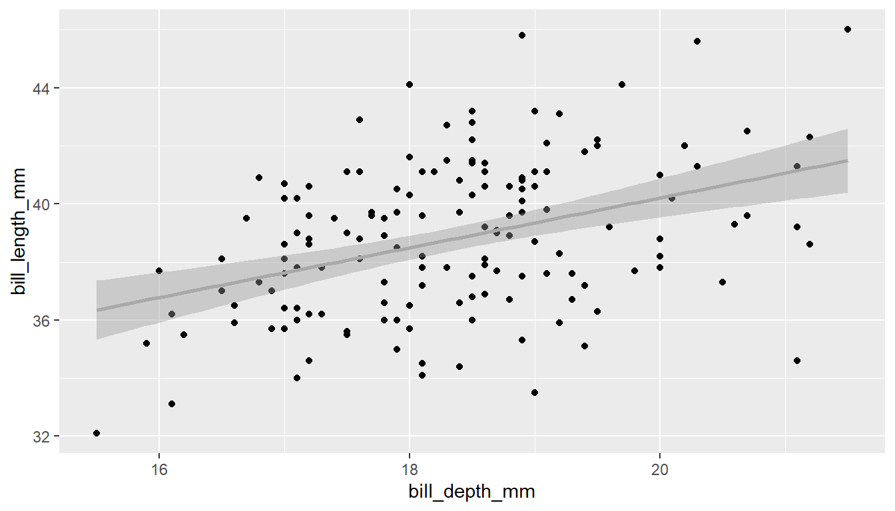
Build a lm - model
##
## Call:
## lm(formula = bill_length_mm ~ bill_depth_mm, data = adelie)
##
## Residuals:
## Min 1Q Median 3Q Max
## -6.5513 -1.8016 0.0055 1.6771 6.5341
##
## Coefficients:
## Estimate Std. Error t value Pr(>|t|)
## (Intercept) 23.068 3.034 7.603 3.01e-12 ***
## bill_depth_mm 0.857 0.165 5.193 6.67e-07 ***
## ---
## Signif. codes: 0 '***' 0.001 '**' 0.01 '*' 0.05 '.' 0.1 ' ' 1
##
## Residual standard error: 2.459 on 149 degrees of freedom
## Multiple R-squared: 0.1533, Adjusted R-squared: 0.1476
## F-statistic: 26.97 on 1 and 149 DF, p-value: 6.674e-07
Calculate prediction interval for y_hat (bill_length_mm)
# calculate prediction interval fit, lws and upr, CI = 95%
pred_adelie <- predict(model_adelie,
interval = "prediction",
level = 0.95)
# combine dataset and prediction interval using "cbind" (colum bind function)
adelie_new <- cbind(adelie, pred_adelie)
head(adelie_new)## bill_depth_mm bill_length_mm fit lwr upr
## 1 18.7 39.1 39.09447 34.21798 43.97097
## 2 17.4 39.5 37.98034 33.09545 42.86523
## 3 18.0 40.3 38.49455 33.61811 43.37099
## 4 19.3 36.7 39.60869 34.72365 44.49373
## 5 20.6 39.3 40.72282 35.79261 45.65303
## 6 17.8 38.9 38.32315 33.44476 43.20153
Plot prediction interval
# Plot prediction interval
adelie_new %>%
ggplot(aes(x = bill_depth_mm)) +
geom_point(aes(y = bill_length_mm))+
geom_smooth(aes(y = bill_length_mm), method = "lm", level = 0.95)+
geom_line(aes(y = upr), col = "red", linetype = "dashed")+
geom_line(aes(y = lwr), col = "red", linetype = "dashed")+
labs(title = "Penguin Adelie bill depth vs bill length",
subtitle = "Confidence and prediction intervals 0.95")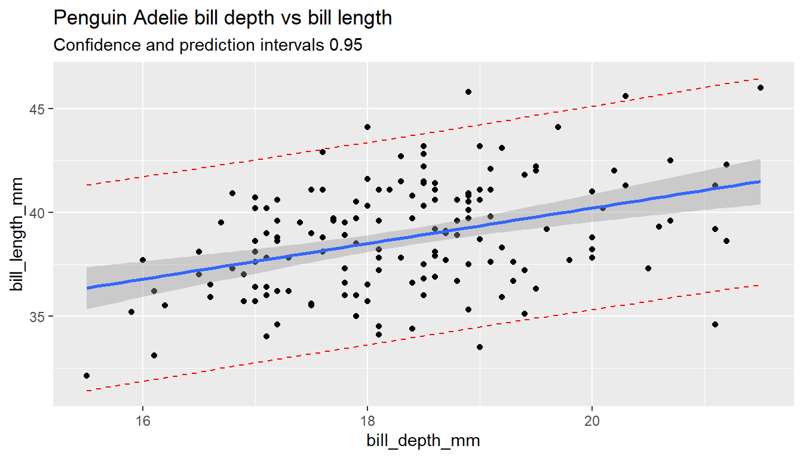
Example Emhurst College: Relationship between family income and gift aid
# Prepare data set
df_select_elmhurst <- elmhurst %>%
select(family_income, gift_aid) %>%
arrange(desc(family_income))
Scatterplot for Elmhurst College: family income vs gift aid
df_select_elmhurst %>%
ggplot(aes(x=family_income, y=gift_aid))+
geom_point(color = "darkgrey", size = 3)+
geom_smooth(method = "lm", se=T, color = "blue")+
labs(title = "Elmhurst College: Family income vs Gift aid")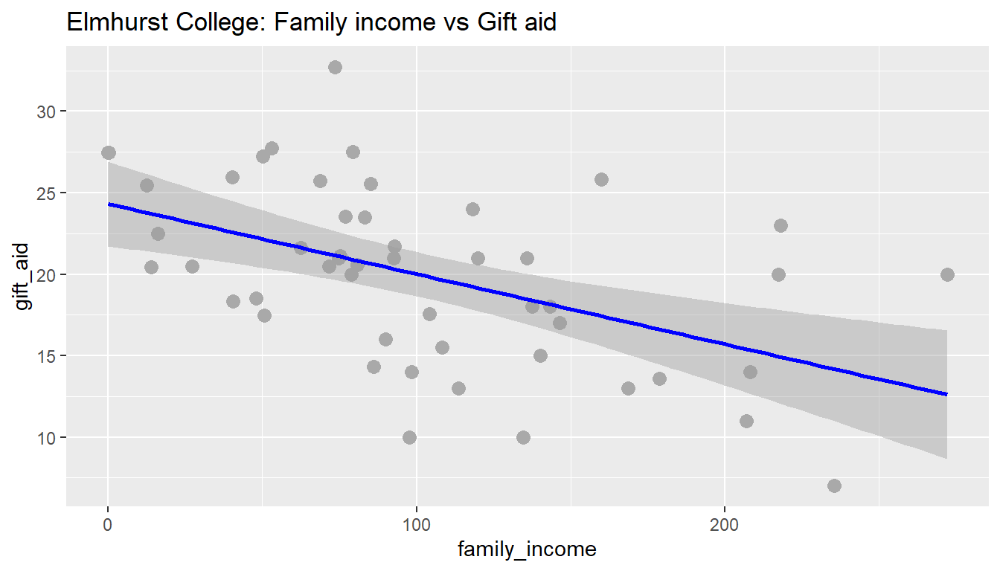
Details of regression line model
Calculate prediction interval for y_hat (gift_aid)
# calculate prediction interval fit, lws and upr, CI = 95%
pred_elmhurst <- predict(model_elmhurst,
interval = "prediction",
level = 0.95)
# combine dataset and prediction interval using "cbind" (colum bind function)
df_select_elmhurst_new <- cbind(df_select_elmhurst, pred_elmhurst)
head(df_select_elmhurst_new)## family_income gift_aid fit lwr upr
## 1 271.974 20 12.60496 2.212623 22.99730
## 2 235.522 7 14.17501 4.037588 24.31243
## 3 218.120 23 14.92454 4.889025 24.96006
## 4 217.443 20 14.95370 4.921882 24.98552
## 5 208.115 14 15.35547 5.372527 25.33842
## 6 206.932 11 15.40643 5.429402 25.38345
Plot prediction interval
# Plot prediction interval
df_select_elmhurst_new %>%
ggplot(aes(x = family_income)) +
geom_point(aes(y = gift_aid))+
geom_smooth(aes(y = gift_aid), method = "lm", level = 0.95)+
geom_line(aes(y = upr), col = "red", linetype = "dashed")+
geom_line(aes(y = lwr), col = "red", linetype = "dashed")+
labs(title = "Elmhurst College: Gift Aid vs. Family Income",
subtitle = "Confidence and prediction intervals 0.95")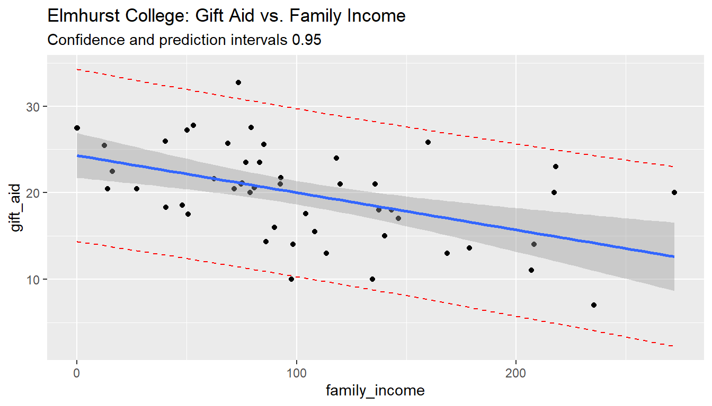